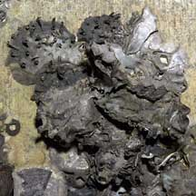
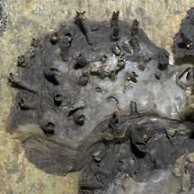
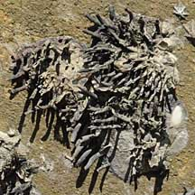

|
|
| bivalves text index | photo index |
| Phylum Mollusca > Class Bivalvia > Family Osteridae |
| Spiked
rock oyster Saccostrea cuccullata* Family Ostreidae updated May 2020 Where seen? This oyster with spikes is commonly seen on our rocky shores, on boulders, rocks, jetty pillings, sea walls and other hard surfaces. Often several individuals squashed next to one another. Features: 3-4cm. The two-part shell is thick and chalky. The left valve is stuck to a rock while long, hollow spikes develop on the right valve. The spikes are more prominent in younger animals. This is probably a defence against predatory snails like Drills. The spines might make it difficult for such a snail to bore a hole in the oyster's shell. But this is no defense against determined humans. This oyster is eaten in many parts of the wold where they occur. |
|
 Tanah Merah, May 05 |
 |
 Berlayar Creek, Mar 09 |
*Species are difficult to positively identify without close examination.
On this website, they are grouped by external features for convenience of display.
| Spiked oysters on Singapore shores |
On wildsingapore
flickr
|
Links
|